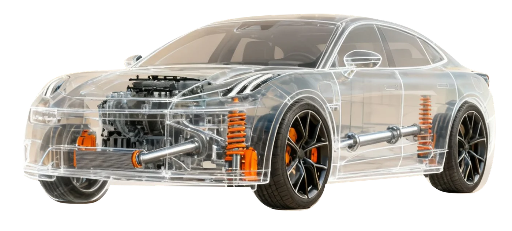
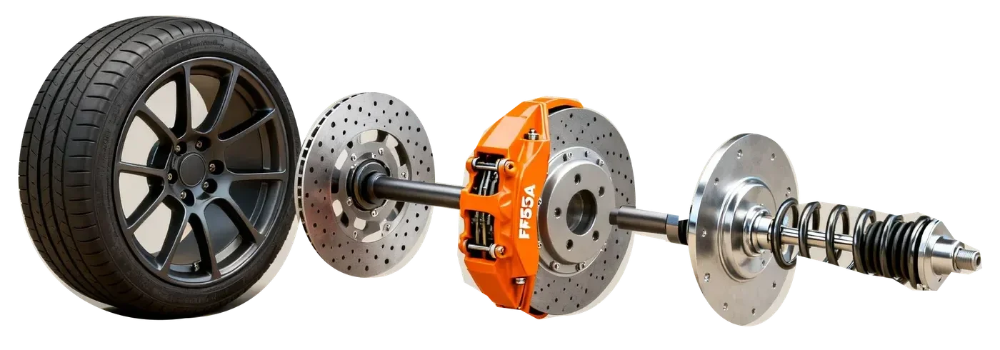
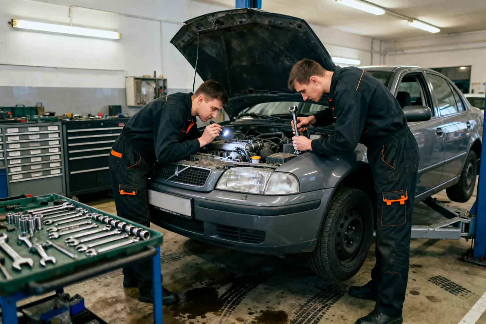

Sprawdzamy
Diagnozujemy problem
i szukamy jego przyczyny.
Dobra diagnoza. Spokojna głowa.
Diagnoza, konkretna wycena
i dopiero wtedy naprawa.

Przesuń kursor.Dotknij punktu. Zajrzyj pod maskę.
WIDZIMY WIĘCEJ01 / Jak pracujemy

Diagnozujemy problem
i szukamy jego przyczyny.
Ustalamy zakres
i koszt naprawy.
Zaczynamy po
twojej akceptacji.
02 / Usługi
Kompleksowa obsługa samochodów osobowych.
Świeci kontrolka albo auto zachowuje się inaczej? Sprawdzimy przyczynę.
Zapytaj o tę usługęSprawdzimy tarcze, klocki i pozostałe elementy układu hamulcowego.
Zapytaj o tę usługęStuki, luzy, nierówne prowadzenie. Zaczynamy od sprawdzenia.
Zapytaj o tę usługęWymiana opon i kontrola ustawienia kół.
Zapytaj o tę usługęOlej, filtry i przegląd zgodny z potrzebami twojego auta.
Zapytaj o tę usługęPrzykładowy zakres usług — projekt koncepcyjny.

03 / O nas
Rozmawiamy normalnie.
Pokazujemy, co wymaga naprawy. Ustalamy zakres przed rozpoczęciem pracy.
Dobra naprawa zaczyna się
od dobrej rozmowy.
04 / Opinie
Miejsce na zweryfikowaną
opinię klienta
Miejsce na zweryfikowaną
opinię klienta
Umów wizytę
Opisz objaw. Oddzwonimy
i ustalimy termin.
05 / FAQ
Tak. Najpierw uzgadniamy zakres i koszt. Jeśli podczas pracy pojawi się coś dodatkowego, kontaktujemy się przed rozszerzeniem naprawy.
Ustalmy to podczas umawiania wizyty. Potwierdzimy godzinę i sposób przekazania auta.
To zależy od objawu i zakresu sprawdzenia. Przewidywany czas omówimy przy przyjęciu auta.
06 / Kontakt